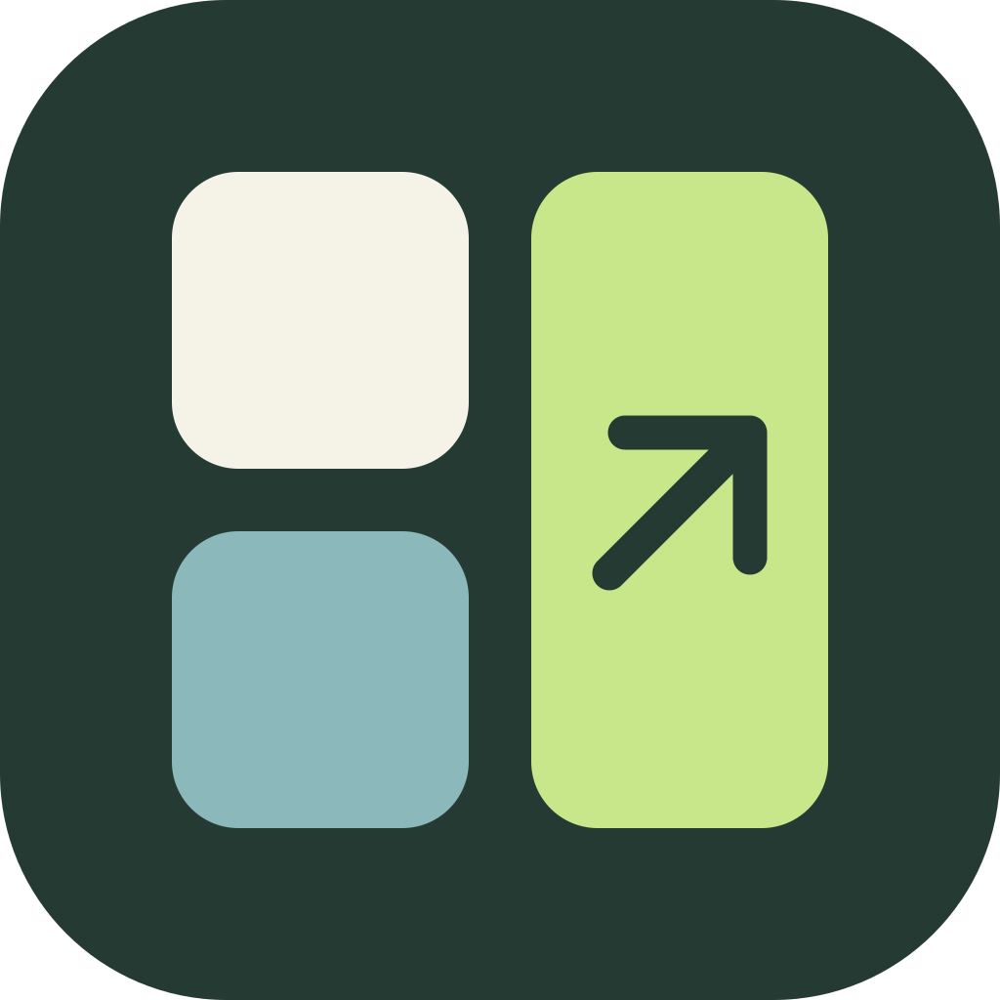

状态，抬眼就见。
蓝色运行中，绿色已完成。停止的任务标出 STOP。额度和重置时间也在这里，不必打断手头的工作。
● 运行中■ STOP

Codex Deck运行中 ↗
studio / design已完成 ↗
app / coreONE TAP. BACK TO WORK.
每块键帽就是一个会话。
一个就铺满，两个或三个自动平分。
完成的任务不想看，轻点“不看”就好。
这里是交互演示，不会操作你的 Mac。
蓝色运行中，绿色已完成。停止的任务标出 STOP。额度和重置时间也在这里，不必打断手头的工作。
最多三个大按键，横竖屏都好按。新会话自动加入，隐藏的会话会被记住，也可以随时找回来。
默认保持 iPhone 前台常亮，太阳按钮可切换，不影响 Mac 睡眠。断线后保留键盘并自动重连。Mac 端安静待在菜单栏里。
A SMALL RITUAL. THEN, NOTHING.
Mac 菜单栏里的二维码，
手机扫一扫。你的桌面，多了几个实体感按键。
四方格图标留在菜单栏，不必开着终端。
连接同一网络，允许本地网络访问。
打开 Codex Deck，让它一直亮着。
YOURS TO USE. YOURS TO BUILD.
不用购买额外的控制器。
一个原生 App，一点刚刚好的便利。
iPhone 版需要用 Xcode 和自己的 Apple ID 签名安装，目前没有 App Store 或 TestFlight 版本。Mac 下载版尚未公证，首次打开请参照安装指南。
Deck 通过局域网 HTTPS 传输会话名称、状态和额度，不使用中转服务器。配对密钥保存在设备本地。Mac 上的 Codex 本身仍按其正常方式连接服务。
目前不能保证。当前 Codex 本地记录未提供完整、可靠的待回答和审批事件，所以本版不能作为提问提醒器使用。状态跟随最后保存的记录，长时间无输出不会被判成停止。
当前支持本机 Codex 桌面/扩展来源的主会话，不包含 SSH 远程主机或子代理。点击成功代表 Mac 接受了会话链接。
不是。Codex Deck 是 flaricy 制作的独立开源项目，与 OpenAI 没有隶属或背书关系。